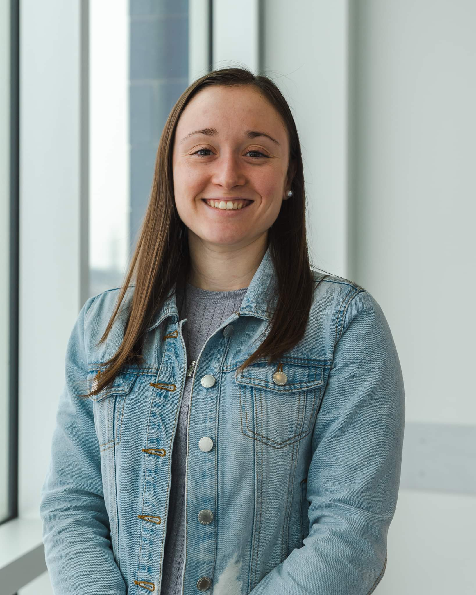

Rose Poirier
Psychoéducatrice
Rose accompagne les enfants et leurs familles avec une approche centrée sur leurs forces, leur développement et leur réalité quotidienne.
Lire la biographie →Piedmont · Laurentides
Comprendre l’enfant, dans toutes ses couleurs. — Clinique spécialisée dans l'évaluation du trouble du spectre de l'autisme chez les enfants de 3 à 12 ans, dans une approche humaine, rigoureuse et multidisciplinaire.
Une équipe qui prend le temps.
Professionnelles en psychoéducation et en travail social, en collaboration avec des pédiatres affiliées.
Notre approche
Notre démarche combine l'expertise de professionnelles de différents domaines afin d'offrir aux familles une évaluation structurée, nuancée et respectueuse.
En savoir plus sur l’évaluation du TSA dans les Laurentides →
Notre équipe

Psychoéducatrice
Rose accompagne les enfants et leurs familles avec une approche centrée sur leurs forces, leur développement et leur réalité quotidienne.
Lire la biographie →Travailleuse sociale
Nathalie privilégie une approche globale qui tient compte de l'enfant, de sa famille et de son environnement.
Lire la biographie →Pédiatres affiliées
Chaque parcours est pris en charge par une seule professionnelle — soit la psychoéducatrice, soit la travailleuse sociale — en collaboration avec un pédiatre affilié. Le volet médical est toujours requis et la portion médicale est couverte par la RAMQ selon les modalités applicables.
Une première étape
Nous sommes là pour vous accompagner avec écoute et rigueur.